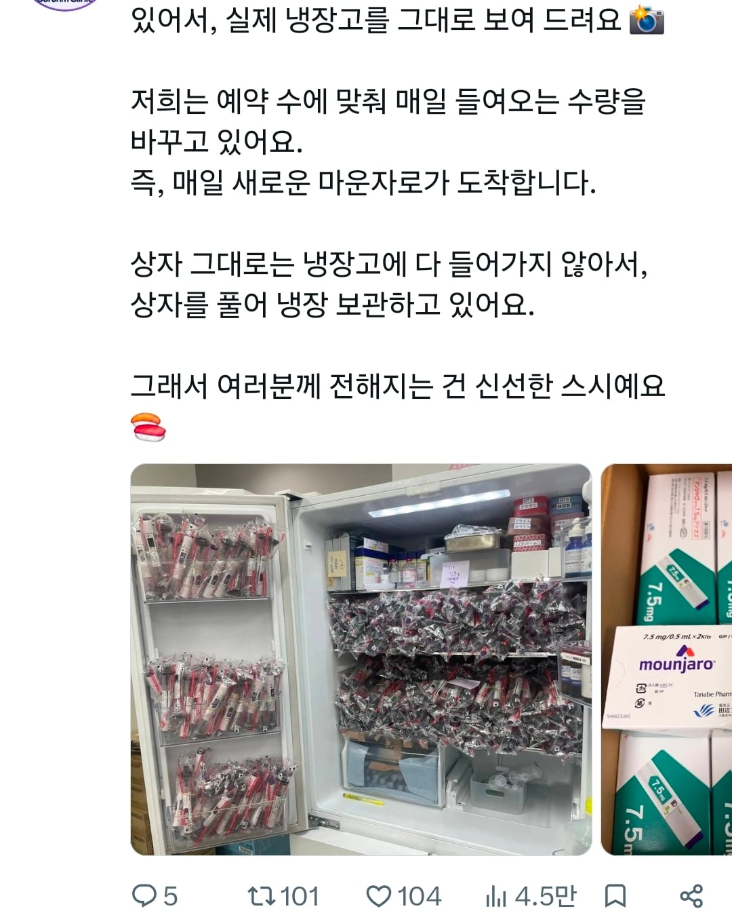
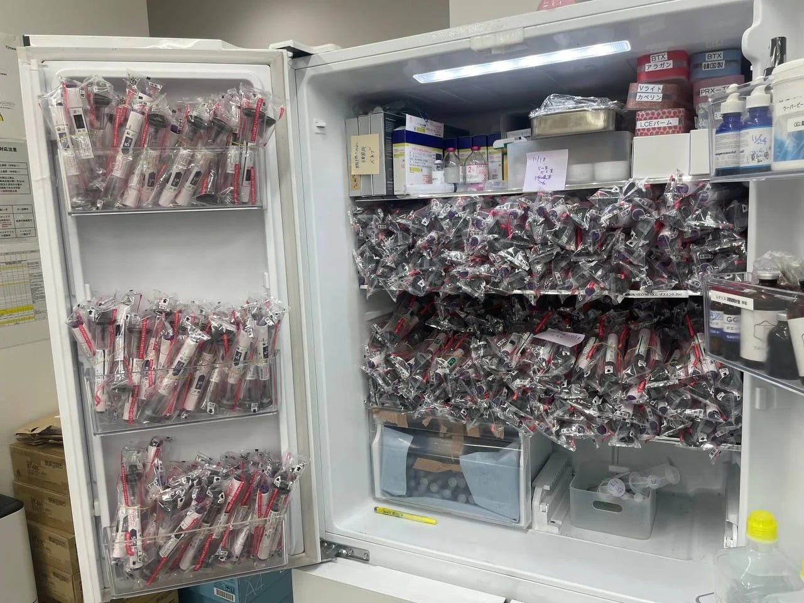

'물량 걱정 하지 마시오 김치맨'


'물량 걱정 하지 마시오 김치맨'
대마도는 기천년을 저걸로 먹고 사네 ㅋㅋㅋㅋㅋㅋㅋㅋㅋ
마쓰야마 1월에가는데 마쓰야마에 구할수있으려나
갑자기 폼올라서 bmi26에 체지방률 20넘어서 비만 바라보고있는디
https://trip.xn--o39an2bqdw74b8te7xy.com/matsuyama-mounjaro-price-reservation/
존나많아
저기 어딘교오
냉장고 : 내 다이어트는?
대마도에 병원 열고 있겠는데? 부산에서 당일치기 여행표
싸게 구하고 관광에 스시자로까지 ㅋㅋㅋ
슬림클리닉쪽에서 아예 대면진료 가능한 병원 섭외중이라던데
후쿠오카 병원에서 대마도까지 보내준다카드라 ㅋㅋㅋ
근대 대마도 당일치기 위험성 있음 대부분 비대면 배송이라 지금은 안 잡고 있을 뿐 어느 순간 뺏을지 모름 1박2일이면 상관없지만
놀랍게도 주말 진료 안보던 병원도 지금 풀영업중임 ㅋㅋㅋ
병원은 처방전(3300엔)+주사값(평균 객당 월 3개월 치 기준 3000엔) = 합 6천엔 이상 마진이라서
존나게 노젓는다고함. 딸깍하고 주면 6만원이라고~
거기다 다들 그냥 약받는게 목적이라 귀찮게 안함 ㅋㅋㅋ
오히려 주의사항 이야기 하는데 언제 끝나나 하고있음 ㅋㅋㅋㅋ
의사도 굳이 얘기하기 싫은데 법때문에 해야되서 귀찮아할듯 ㅋㅋㅋ
이거 근데 맞으면 효과있긴함?
내 친구들 기본 2달기준 5키로 이상은 빠짐
이거만큼 검증된것도 별로없지?
난 약빨 존나 잘받아서 부작용 1도없이 29kg뺌 105 > 76 첫 두달에 20 가까이 빠졌고 6개월차 까지 천천히 빠진듯
몇미리 맞음?
식단 운동 열심히함?
2.5 , 2.5, 5, 5, 7.5 7.5, 10, 10, 5
5로 유지할생각
7.5까지 운동은 하나도 안했음
식단은 먹는게 줄어서 자연스럽게 되긴했는데
그래도 기왕 조금먹는거 신경은씀
7.5 후반부턴 왜소해보여서 그냥 근력 운동함
4펜씩 팔지 않음? 어떻게 두펜씩 맞음?
? 그냥 하나씩 맞았는데 용량이
2.5 5 7.5 10mg 으로 나눠서 팔고
4개씩 들었음 첫달에 2.5 셋째달에 5맞았다고
아 9개월째라는 거구나 ㄳㄳ
관리 어떻게 하냐? 약 끊으면 식욕 다시 올라와서 요요 온다던데
모든 다이어트가 똑같음 얘만 그런거 아님
마른 사람인가..
위고비는 솔직히 효과못봤는데 마운자로 4달맞고 14키로빠졌음..
너 밑에 첫댓이 2달기준 5키로라는 것도 효과 못받는 애들 기준임.
잘받는애들은 달에 8키로씩 뺌
와 장난아니구나;;
알려줘서 고마워요
저렇게 해서 한국릴리 판매량이 급감해야됨.
최소한 일본까지 가서 사올 메리트가 없는 수준까지 가격을 다운시키게끔 해야됨
신선한 스시에요 ㅋㅋㅋㅋㅋ
역시 스시는 일본
사악한 일본놈들 또 조선인의 지갑을 털어가는구나
장사 잘하시네 ㅋㅋㅋㅋ
신선한 스시 ㅋㅋㅋㅋ 미친 ㅋㅋㅋ
터제파타이드 차원이 달라
릴리야.. 많이 먹었다 이제 그만 내리자...